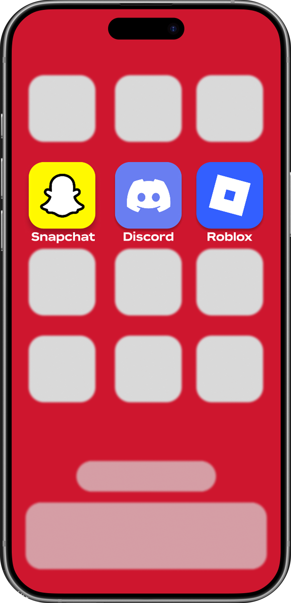
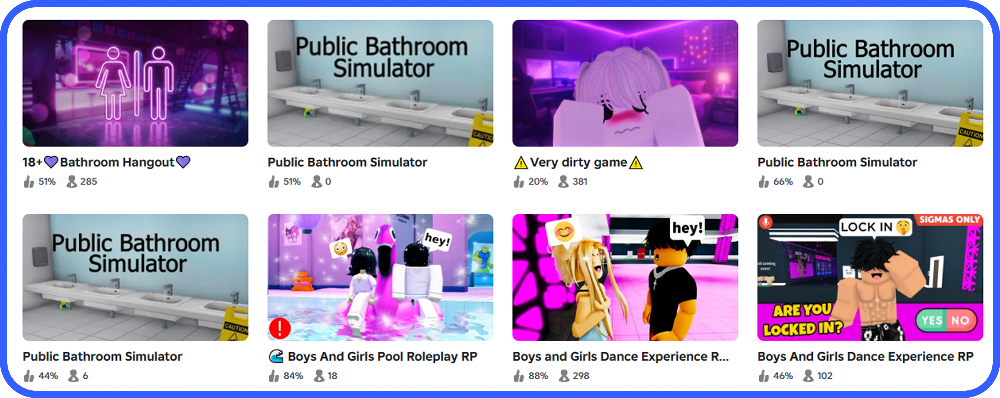

The #1 reason why children on Roblox end up getting kidnapped by Roblox grooming is that they share their address and personal information with the groomer.
Children should be taught that, in online spaces, especially on Roblox, they should never share their personal information, including their real names.

Many children become victims of grooming because they agree to meet with their online ‘friends’ in person. It’s important for children to be aware that they should never meet with any stranger online, no matter who they are, or who they appear to be.
Roblox groomers often take their conversations with children off Roblox and to other social media platforms, most commonly Snapchat and Discord, where they can talk more freely.
Parents and caretakers should always check to see if children have these apps installed. To ensure the safety of children, ensure that they understand to never add anyone from Roblox and other games on other social media platforms.

Parents and caretakers should check what kinds of games their Children are playing on Roblox. There are many inappropriate games easily searchable on Roblox, especially ones titled (18+). Roblox groomers often use these games to exploit and groom children playing them. Make sure to see all of the games children are playing on Roblox, as Roblox saves all of the recently played games on the account. Ensure that younger children show what kinds of games they’re playing on Roblox before playing them, and always double-check on the account after to see what they’ve played.

It’s easier for Roblox and other gaming platform groomers to take advantage of children through direct messages. Parents and caretakers should ensure that they check who their children are friending and directly messaging. For younger children, make sure that they aren’t adding anyone to their friends list, and therefore being able to directly message them.
It’s important to watch for warning signs that a child may currently be groomed. A possible sign of grooming in a child may be behavior changes, such as sudden mood shifts, aggression, and isolation. Children can also exhibit secretive behavior, such as keeping their chats and friendships private even when questioned.
Play Our Game to Help Recognize and be Aware of Targeted Grooming Attacks